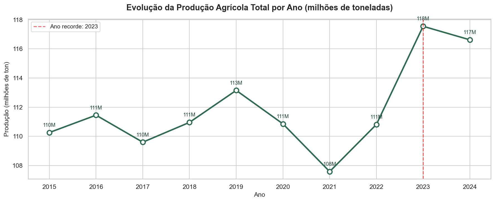
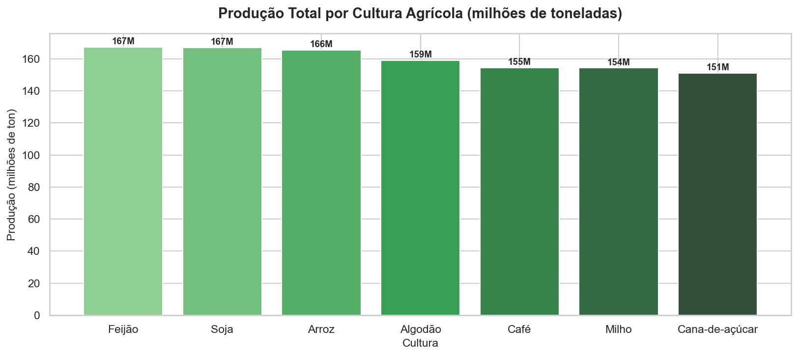
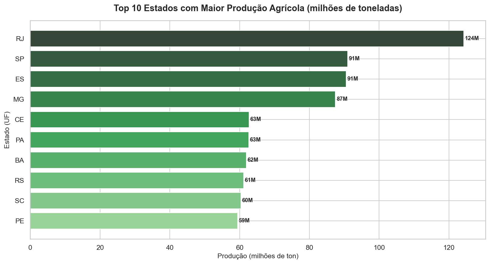
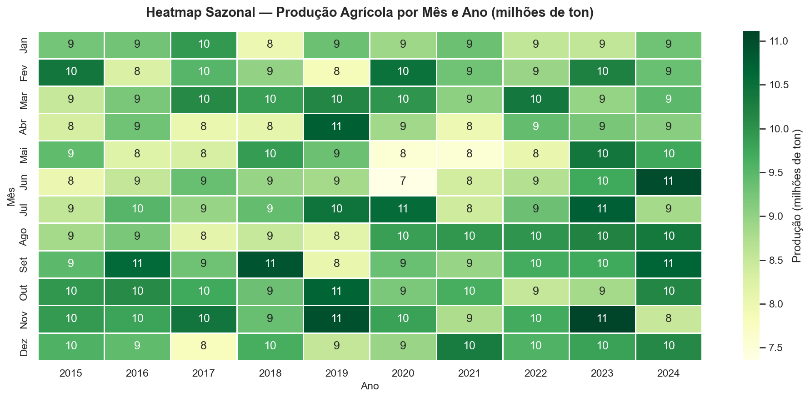
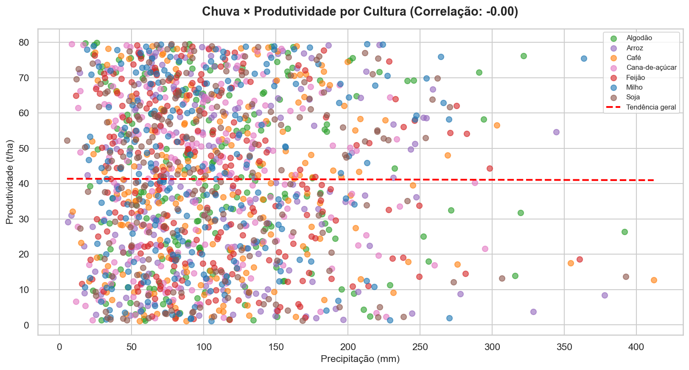
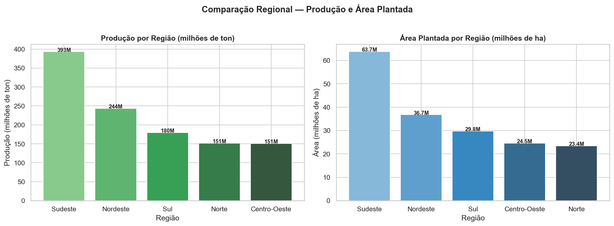
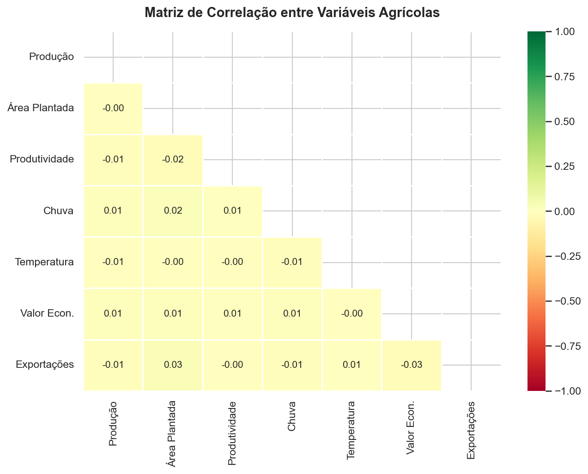
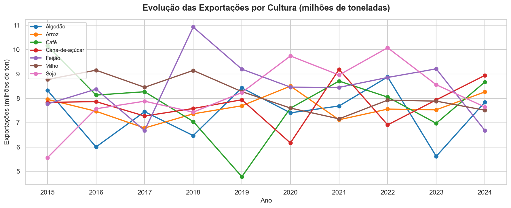
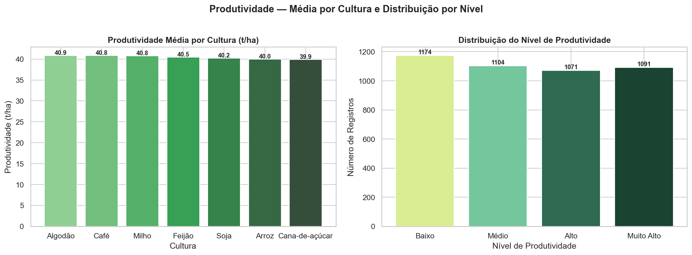
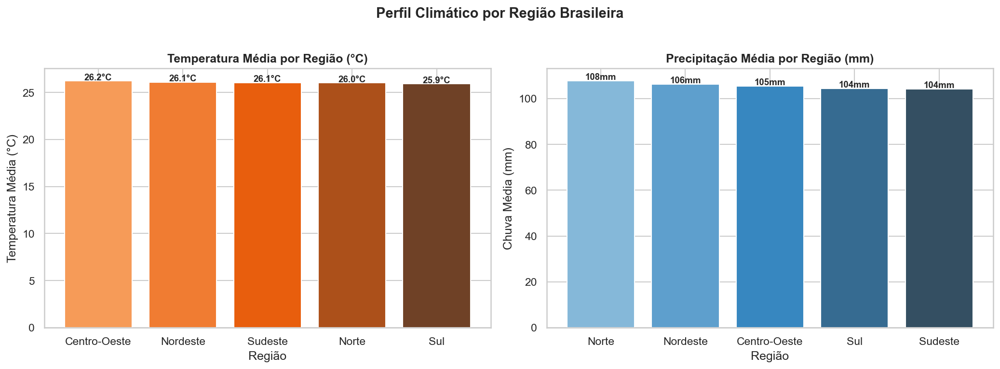

📌 Indicadores do Projeto
⚙️ Funcionalidades do Dashboard
Visão Geral
KPIs dinâmicos e gráficos de resumo que se atualizam em tempo real conforme os filtros aplicados.
Evolução Temporal
Linha do tempo da produção anual, análise por cultura e heatmap sazonal por mês e ano.
Análise Regional
Comparação de produção e área plantada entre as 5 regiões e ranking dos principais estados.
Análise por Cultura
Produção, valor econômico e produtividade média por cultura, com evolução ao longo dos anos.
Clima × Produtividade
Correlação estatística entre precipitação, temperatura e produtividade com matriz de correlação.
Exportações
Evolução das exportações por cultura e estado, com ranking dos maiores exportadores.
Exploração de Dados
Tabela dinâmica com ordenação, download dos dados filtrados e conclusão executiva automatizada.
Filtros Múltiplos
6 filtros simultâneos: ano, mês, região, estado, cultura e nível de produtividade.
📊 Visualizações do Notebook

📈 Evolução da Produção por Ano
🌱 Produção Total por Cultura
🏆 Ranking de Estados Produtores
🗓️ Heatmap Sazonal por Mês e Ano
🌧️ Chuva × Produtividade
🗺️ Comparação Regional
🔗 Matriz de Correlação
✈️ Evolução das Exportações
⚡ Produtividade por Cultura
🌡️ Perfil Climático por Região🛠️ Tecnologias Utilizadas
| Tecnologia | Finalidade | Onde foi usada |
|---|---|---|
| 🐍 Python 3.11 | Linguagem principal | Notebook e dashboard |
| 🐼 Pandas | Manipulação de dados | Notebook e app.py |
| 🔢 NumPy | Cálculos e correlações | Notebook e app.py |
| 📉 Matplotlib | Gráficos estáticos | Notebook |
| 🎨 Seaborn | Heatmaps e estilos | Notebook |
| 📊 Plotly | Gráficos interativos | Dashboard (app.py) |
| 🚀 Streamlit | Dashboard web | app.py |
| 🐙 GitHub | Código-fonte | Repositório e Pages |